Tier IX Tanks
The Best Performing Tanks
Highest Relative WR
The graph shows the tanks with the highest Relative WR. That is the average of players' WR in a tank compared to their average WR at the tier (in all same tier tanks). Relative WR is a measure of the performance/strength of the tank.
- All the statistics are about battles fought during the update 7.0 only.
- The impact of “Stock-grind battles” is reduced based on tier-specific requirement for total battles at the end of the update. Only players with more than 0-152 (depending on the tier) battles in a tank in the end of the update are included to eliminate the impact of the first battles in the tank (with sub-100% crew / modules).
- The players need to have 10-20 battles in a tank and 20-40 battles at the tier during the update.
- Average WR is the players’s average WR in the tank
- Player WR at Tier is the average WR of the players of the tank at the tier. Since different tiers have different difficulty, it is more meaningful to compare players' performance in the same tier tanks.
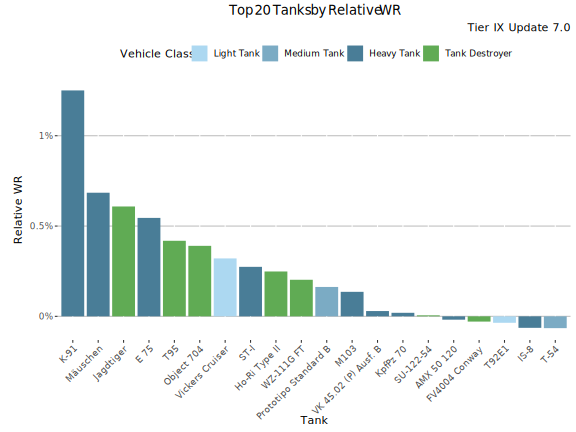
Highest Relative WR - Table
| Tank | Relative WR | Average WR | Player WR at Tier | Players | Battles/Player | Vehicle Class | Tank type |
|---|---|---|---|---|---|---|---|
| K-91 | 1.29% | 54.3% | 53.1% | 3 335 | 97 | Heavy Tank | Premium |
| Mäuschen | 0.66% | 51.1% | 50.5% | 1 491 | 99 | Heavy Tank | Researchable |
| Jagdtiger | 0.61% | 51.4% | 50.8% | 3 275 | 116 | Tank Destroyer | Researchable |
| E 75 | 0.55% | 50.5% | 50% | 5 741 | 130 | Heavy Tank | Researchable |
| T95 | 0.44% | 51.9% | 51.5% | 999 | 160 | Tank Destroyer | Researchable |
| Object 704 | 0.41% | 50.5% | 50.1% | 4 613 | 130 | Tank Destroyer | Researchable |
| Vickers Cruiser | 0.32% | 59.2% | 58.9% | 2 211 | 201 | Light Tank | Researchable |
| ST-I | 0.27% | 49.9% | 49.7% | 2 374 | 129 | Heavy Tank | Researchable |
| Ho-Ri Type II | 0.25% | 52.1% | 51.8% | 1 679 | 114 | Tank Destroyer | Researchable |
| WZ-111G FT | 0.2% | 51.4% | 51.2% | 1 097 | 109 | Tank Destroyer | Researchable |
| Prototipo Standard B | 0.16% | 51.2% | 51.1% | 6 006 | 111 | Medium Tank | Researchable |
| M103 | 0.12% | 49.7% | 49.6% | 2 259 | 114 | Heavy Tank | Researchable |
| VK 45.02 (P) Ausf. B | 0.03% | 49.9% | 49.9% | 1 440 | 112 | Heavy Tank | Researchable |
| KpfPz 70 | 0.03% | 53.5% | 53.5% | 3 866 | 87 | Heavy Tank | Premium |
| SU-122-54 | 0% | 51.4% | 51.4% | 1 721 | 115 | Tank Destroyer | Researchable |
| AMX 50 120 | -0.03% | 49.6% | 49.6% | 2 769 | 108 | Heavy Tank | Researchable |
| FV4004 Conway | -0.03% | 52.3% | 52.3% | 2 455 | 113 | Tank Destroyer | Researchable |
| T92E1 | -0.04% | 52.3% | 52.3% | 11 163 | 122 | Light Tank | Researchable |
| T-54 | -0.06% | 51% | 51% | 7 545 | 155 | Medium Tank | Researchable |
| IS-8 | -0.07% | 48.3% | 48.4% | 4 416 | 149 | Heavy Tank | Researchable |
Relative WR by player skill-level
This graph shows the best performing tanks by Relative WR by player skill-levels measured as WR at the tank’s tier.
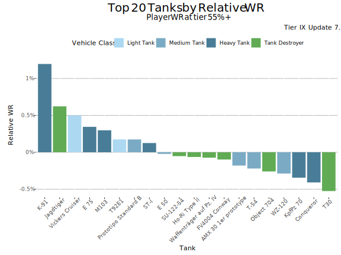
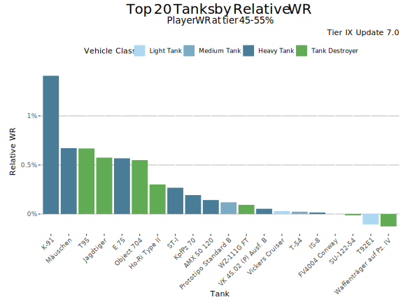
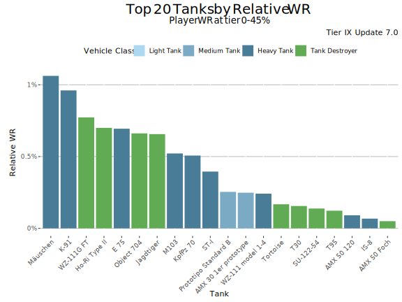
Highest Average WR
This graph shows the tanks with the highest average WR at tier IX during update 7.0. Player WR denotes the tank’s players' average WR across all the tanks during the update. Only tanks with more than 400 players are listed. This may filter out few upcoming tanks that are being tested.
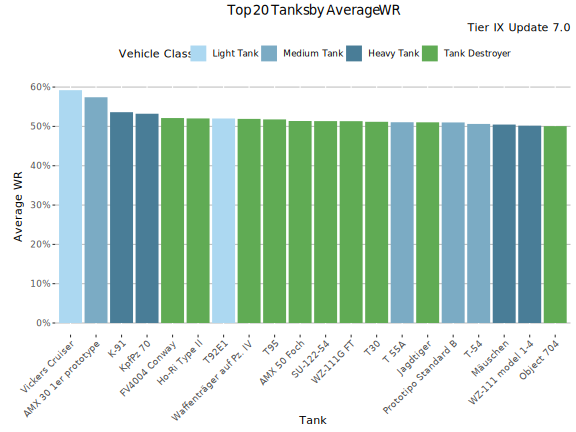
Highest Average WR - Table
Average WR denotes average WR in a tank across all the players during the update. Player WR denotes the tank’s players' average WR across all the tanks during the update.
| Tank | Average WR | Player WR at Tier | Players | Battles/Player | Vehicle Class | Tank type |
|---|---|---|---|---|---|---|
| Vickers Cruiser | 59.2% | 58.9% | 2 235 | 201 | Light Tank | Researchable |
| AMX 30 1er prototype | 57.5% | 57.7% | 2 142 | 62 | Medium Tank | Premium |
| K-91 | 53.7% | 52.7% | 4 288 | 88 | Heavy Tank | Premium |
| KpfPz 70 | 53.3% | 53.3% | 4 942 | 77 | Heavy Tank | Premium |
| FV4004 Conway | 52.2% | 52.2% | 2 684 | 110 | Tank Destroyer | Researchable |
| T92E1 | 52.1% | 52.1% | 12 828 | 118 | Light Tank | Researchable |
| Ho-Ri Type II | 52% | 51.7% | 1 821 | 111 | Tank Destroyer | Researchable |
| Waffenträger auf Pz. IV | 52% | 52.1% | 18 498 | 149 | Tank Destroyer | Researchable |
| T95 | 51.8% | 51.4% | 1 204 | 147 | Tank Destroyer | Researchable |
| SU-122-54 | 51.4% | 51.3% | 1 918 | 110 | Tank Destroyer | Researchable |
| WZ-111G FT | 51.4% | 51.1% | 1 225 | 106 | Tank Destroyer | Researchable |
| AMX 50 Foch | 51.4% | 51.5% | 1 191 | 105 | Tank Destroyer | Researchable |
| T30 | 51.3% | 51.5% | 4 283 | 119 | Tank Destroyer | Researchable |
| T 55A | 51.1% | 51.8% | 874 | 61 | Medium Tank | Premium |
| Jagdtiger | 51.1% | 50.6% | 4 043 | 115 | Tank Destroyer | Researchable |
| Prototipo Standard B | 51.1% | 50.9% | 6 701 | 108 | Medium Tank | Researchable |
| T-54 | 50.7% | 50.7% | 9 594 | 142 | Medium Tank | Researchable |
| Mäuschen | 50.5% | 49.9% | 1 934 | 103 | Heavy Tank | Researchable |
| WZ-111 model 1-4 | 50.3% | 50.5% | 856 | 101 | Heavy Tank | Researchable |
| Object 704 | 50.2% | 49.8% | 5 620 | 126 | Tank Destroyer | Researchable |
Highest Average Damage
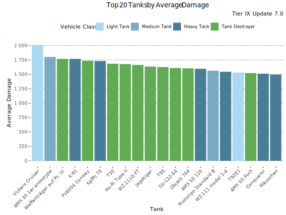
Highest Average Damage - Table
| Tank | Average Damage | Average WR | Player WR at Tier | Players | Battles/Player | Vehicle Class | Tank type |
|---|---|---|---|---|---|---|---|
| Vickers Cruiser | 2 009 | 59.2% | 58.9% | 2 235 | 201 | Light Tank | Researchable |
| AMX 30 1er prototype | 1 804 | 57.5% | 57.7% | 2 142 | 62 | Medium Tank | Premium |
| K-91 | 1 773 | 53.7% | 52.7% | 4 288 | 88 | Heavy Tank | Premium |
| Waffenträger auf Pz. IV | 1 772 | 52% | 52.1% | 18 498 | 149 | Tank Destroyer | Researchable |
| FV4004 Conway | 1 737 | 52.2% | 52.2% | 2 684 | 110 | Tank Destroyer | Researchable |
| KpfPz 70 | 1 735 | 53.3% | 53.3% | 4 942 | 77 | Heavy Tank | Premium |
| T30 | 1 687 | 51.3% | 51.5% | 4 283 | 119 | Tank Destroyer | Researchable |
| Ho-Ri Type II | 1 678 | 52% | 51.7% | 1 821 | 111 | Tank Destroyer | Researchable |
| WZ-111G FT | 1 666 | 51.4% | 51.1% | 1 225 | 106 | Tank Destroyer | Researchable |
| Jagdtiger | 1 636 | 51.1% | 50.6% | 4 043 | 115 | Tank Destroyer | Researchable |
| T95 | 1 629 | 51.8% | 51.4% | 1 204 | 147 | Tank Destroyer | Researchable |
| SU-122-54 | 1 613 | 51.4% | 51.3% | 1 918 | 110 | Tank Destroyer | Researchable |
| Object 704 | 1 609 | 50.2% | 49.8% | 5 620 | 126 | Tank Destroyer | Researchable |
| AMX 50 120 | 1 597 | 49.3% | 49.4% | 3 202 | 106 | Heavy Tank | Researchable |
| Prototipo Standard B | 1 569 | 51.1% | 50.9% | 6 701 | 108 | Medium Tank | Researchable |
| WZ-111 model 1-4 | 1 549 | 50.3% | 50.5% | 856 | 101 | Heavy Tank | Researchable |
| T92E1 | 1 533 | 52.1% | 52.1% | 12 828 | 118 | Light Tank | Researchable |
| AMX 50 Foch | 1 521 | 51.4% | 51.5% | 1 191 | 105 | Tank Destroyer | Researchable |
| Conqueror | 1 514 | 49.3% | 49.8% | 1 936 | 104 | Heavy Tank | Researchable |
| Mäuschen | 1 494 | 50.5% | 49.9% | 1 934 | 103 | Heavy Tank | Researchable |
Highest Average Kills/Battle
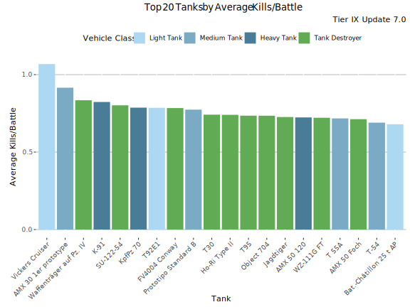
Highest Average Kills/Battle - Table
| Tank | Average Kills/Battle | Average WR | Player WR at Tier | Players | Battles/Player | Vehicle Class | Tank type |
|---|---|---|---|---|---|---|---|
| Vickers Cruiser | 1.07 | 59.2% | 58.9% | 2 235 | 201 | Light Tank | Researchable |
| AMX 30 1er prototype | 0.92 | 57.5% | 57.7% | 2 142 | 62 | Medium Tank | Premium |
| Waffenträger auf Pz. IV | 0.84 | 52% | 52.1% | 18 498 | 149 | Tank Destroyer | Researchable |
| K-91 | 0.83 | 53.7% | 52.7% | 4 288 | 88 | Heavy Tank | Premium |
| SU-122-54 | 0.80 | 51.4% | 51.3% | 1 918 | 110 | Tank Destroyer | Researchable |
| KpfPz 70 | 0.79 | 53.3% | 53.3% | 4 942 | 77 | Heavy Tank | Premium |
| T92E1 | 0.79 | 52.1% | 52.1% | 12 828 | 118 | Light Tank | Researchable |
| FV4004 Conway | 0.78 | 52.2% | 52.2% | 2 684 | 110 | Tank Destroyer | Researchable |
| Prototipo Standard B | 0.78 | 51.1% | 50.9% | 6 701 | 108 | Medium Tank | Researchable |
| T30 | 0.74 | 51.3% | 51.5% | 4 283 | 119 | Tank Destroyer | Researchable |
| Ho-Ri Type II | 0.74 | 52% | 51.7% | 1 821 | 111 | Tank Destroyer | Researchable |
| Object 704 | 0.74 | 50.2% | 49.8% | 5 620 | 126 | Tank Destroyer | Researchable |
| T95 | 0.74 | 51.8% | 51.4% | 1 204 | 147 | Tank Destroyer | Researchable |
| Jagdtiger | 0.73 | 51.1% | 50.6% | 4 043 | 115 | Tank Destroyer | Researchable |
| AMX 50 120 | 0.72 | 49.3% | 49.4% | 3 202 | 106 | Heavy Tank | Researchable |
| WZ-111G FT | 0.72 | 51.4% | 51.1% | 1 225 | 106 | Tank Destroyer | Researchable |
| T 55A | 0.72 | 51.1% | 51.8% | 874 | 61 | Medium Tank | Premium |
| AMX 50 Foch | 0.71 | 51.4% | 51.5% | 1 191 | 105 | Tank Destroyer | Researchable |
| T-54 | 0.69 | 50.7% | 50.7% | 9 594 | 142 | Medium Tank | Researchable |
| Bat.-Châtillon 25 t AP | 0.68 | 48.2% | 49.7% | 2 001 | 104 | Light Tank | Researchable |
Highest Spot Rate
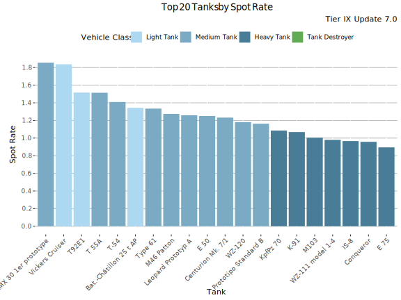
Highest Spot Rate - Table
| Tank | Spot Rate | Average WR | Player WR at Tier | Players | Battles/Player | Vehicle Class | Tank type |
|---|---|---|---|---|---|---|---|
| AMX 30 1er prototype | 1.86 | 57.5% | 57.7% | 2 142 | 62 | Medium Tank | Premium |
| Vickers Cruiser | 1.83 | 59.2% | 58.9% | 2 235 | 201 | Light Tank | Researchable |
| T92E1 | 1.52 | 52.1% | 52.1% | 12 828 | 118 | Light Tank | Researchable |
| T 55A | 1.52 | 51.1% | 51.8% | 874 | 61 | Medium Tank | Premium |
| T-54 | 1.41 | 50.7% | 50.7% | 9 594 | 142 | Medium Tank | Researchable |
| Bat.-Châtillon 25 t AP | 1.35 | 48.2% | 49.7% | 2 001 | 104 | Light Tank | Researchable |
| Type 61 | 1.33 | 49.7% | 50.6% | 1 482 | 115 | Medium Tank | Researchable |
| M46 Patton | 1.27 | 49.3% | 49.9% | 1 169 | 119 | Medium Tank | Researchable |
| Leopard Prototyp A | 1.26 | 47.1% | 48.3% | 3 408 | 110 | Medium Tank | Researchable |
| E 50 | 1.25 | 49.7% | 50.2% | 2 617 | 109 | Medium Tank | Researchable |
| Centurion Mk. 7/1 | 1.23 | 49.7% | 50.2% | 1 850 | 116 | Medium Tank | Researchable |
| WZ-120 | 1.18 | 49.8% | 50.4% | 1 756 | 107 | Medium Tank | Researchable |
| Prototipo Standard B | 1.16 | 51.1% | 50.9% | 6 701 | 108 | Medium Tank | Researchable |
| KpfPz 70 | 1.08 | 53.3% | 53.3% | 4 942 | 77 | Heavy Tank | Premium |
| K-91 | 1.07 | 53.7% | 52.7% | 4 288 | 88 | Heavy Tank | Premium |
| M103 | 1.01 | 49.2% | 49.2% | 2 819 | 113 | Heavy Tank | Researchable |
| WZ-111 model 1-4 | 0.98 | 50.3% | 50.5% | 856 | 101 | Heavy Tank | Researchable |
| IS-8 | 0.97 | 47.7% | 47.9% | 6 109 | 142 | Heavy Tank | Researchable |
| Conqueror | 0.96 | 49.3% | 49.8% | 1 936 | 104 | Heavy Tank | Researchable |
| E 75 | 0.90 | 49.9% | 49.4% | 7 798 | 126 | Heavy Tank | Researchable |
Highest Hit Rate
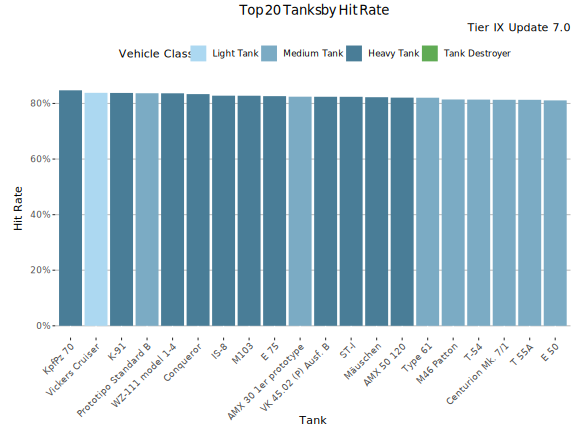
Highest Hit Rate - Table
| Tank | Hit Rate | Average WR | Player WR at Tier | Players | Battles/Player | Vehicle Class | Tank type |
|---|---|---|---|---|---|---|---|
| KpfPz 70 | 84.7% | 53.3% | 53.3% | 4 942 | 77 | Heavy Tank | Premium |
| Vickers Cruiser | 83.8% | 59.2% | 58.9% | 2 235 | 201 | Light Tank | Researchable |
| K-91 | 83.8% | 53.7% | 52.7% | 4 288 | 88 | Heavy Tank | Premium |
| WZ-111 model 1-4 | 83.7% | 50.3% | 50.5% | 856 | 101 | Heavy Tank | Researchable |
| Prototipo Standard B | 83.7% | 51.1% | 50.9% | 6 701 | 108 | Medium Tank | Researchable |
| Conqueror | 83.4% | 49.3% | 49.8% | 1 936 | 104 | Heavy Tank | Researchable |
| IS-8 | 82.8% | 47.7% | 47.9% | 6 109 | 142 | Heavy Tank | Researchable |
| M103 | 82.8% | 49.2% | 49.2% | 2 819 | 113 | Heavy Tank | Researchable |
| E 75 | 82.7% | 49.9% | 49.4% | 7 798 | 126 | Heavy Tank | Researchable |
| AMX 30 1er prototype | 82.5% | 57.5% | 57.7% | 2 142 | 62 | Medium Tank | Premium |
| VK 45.02 (P) Ausf. B | 82.4% | 50% | 49.8% | 1 660 | 106 | Heavy Tank | Researchable |
| ST-I | 82.4% | 49.5% | 49.3% | 2 982 | 127 | Heavy Tank | Researchable |
| Mäuschen | 82.3% | 50.5% | 49.9% | 1 934 | 103 | Heavy Tank | Researchable |
| AMX 50 120 | 82.1% | 49.3% | 49.4% | 3 202 | 106 | Heavy Tank | Researchable |
| Type 61 | 82.1% | 49.7% | 50.6% | 1 482 | 115 | Medium Tank | Researchable |
| M46 Patton | 81.5% | 49.3% | 49.9% | 1 169 | 119 | Medium Tank | Researchable |
| T-54 | 81.4% | 50.7% | 50.7% | 9 594 | 142 | Medium Tank | Researchable |
| Centurion Mk. 7/1 | 81.4% | 49.7% | 50.2% | 1 850 | 116 | Medium Tank | Researchable |
| T 55A | 81.3% | 51.1% | 51.8% | 874 | 61 | Medium Tank | Premium |
| E 50 | 81.1% | 49.7% | 50.2% | 2 617 | 109 | Medium Tank | Researchable |
Most Popular Tanks
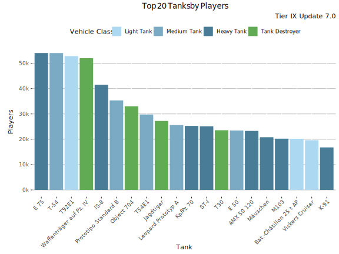
Most played Tanks
This graph shows the most played tanks by number of battles during the update 7.0.
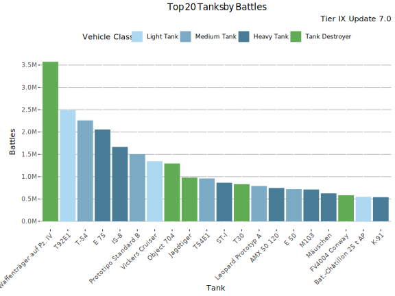
Most Played Tanks - Table
| Tank | Battles | Average WR | Player WR at Tier | Players | Battles/Player | Vehicle Class | Tank type |
|---|---|---|---|---|---|---|---|
| Waffenträger auf Pz. IV | 3.60M | 51.9% | 52.4% | 52 014 | 69 | Tank Destroyer | Researchable |
| T92E1 | 2.50M | 51.1% | 52.7% | 52 820 | 47 | Light Tank | Researchable |
| T-54 | 2.30M | 52% | 51.8% | 54 030 | 42 | Medium Tank | Researchable |
| E 75 | 2.10M | 51.4% | 51.1% | 54 045 | 38 | Heavy Tank | Researchable |
| IS-8 | 1.70M | 49.5% | 49.7% | 41 523 | 40 | Heavy Tank | Researchable |
| Prototipo Standard B | 1.50M | 52.6% | 51.9% | 35 343 | 43 | Medium Tank | Researchable |
| Vickers Cruiser | 1.30M | 57.9% | 59.1% | 19 623 | 69 | Light Tank | Researchable |
| Object 704 | 1.30M | 51.8% | 51.1% | 33 009 | 39 | Tank Destroyer | Researchable |
| Jagdtiger | 0.98M | 53.1% | 51.7% | 27 231 | 36 | Tank Destroyer | Researchable |
| T54E1 | 0.96M | 50.2% | 51% | 29 766 | 32 | Medium Tank | Researchable |
| ST-I | 0.87M | 52.1% | 51% | 25 112 | 34 | Heavy Tank | Researchable |
| T30 | 0.83M | 53.4% | 53.1% | 23 564 | 35 | Tank Destroyer | Researchable |
| Leopard Prototyp A | 0.79M | 48.6% | 50.4% | 25 598 | 31 | Medium Tank | Researchable |
| AMX 50 120 | 0.75M | 51.4% | 51.1% | 23 297 | 32 | Heavy Tank | Researchable |
| E 50 | 0.72M | 51.7% | 52.2% | 23 462 | 31 | Medium Tank | Researchable |
| M103 | 0.71M | 51.6% | 50.9% | 20 238 | 35 | Heavy Tank | Researchable |
| Mäuschen | 0.63M | 51.5% | 50.7% | 20 807 | 30 | Heavy Tank | Researchable |
| FV4004 Conway | 0.58M | 54.3% | 53.4% | 15 667 | 37 | Tank Destroyer | Researchable |
| Bat.-Châtillon 25 t AP | 0.55M | 51% | 51.9% | 20 196 | 27 | Light Tank | Researchable |
| K-91 | 0.54M | 54.5% | 53.1% | 16 784 | 32 | Heavy Tank | Premium |
Lowest Performing Tanks
Lowest Relative WR
The graph shows the tanks with the lowest Relative WR. That is the average of players' WR in a tank compared to their average WR at the tier (in all same tier tanks). Relative WR is a measure of the performance/strength of the tank.
- All the statistics are about battles fought during the update 7.0 only.
- The impact of “Stock-grind battles” is reduced based on tier-specific requirement for total battles at the end of the update. Only players with more than 0-152 (depending on the tier) battles in a tank in the end of the update are included to eliminate the impact of the first battles in the tank (with sub-100% crew / modules).
- The players need to have 10-20 battles in a tank and 20-40 battles at the tier during the update.
- Average WR is the players' average WR in the tank
- Player WR at Tier is the average WR of the players of the tank at the tier. Since different tiers have different difficulty, it is more meaningful to compare players' performance in the same tier tanks.
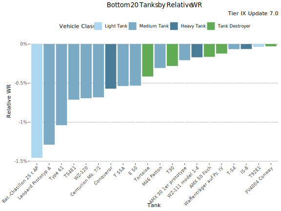
Lowest Relative WR - Table
| Tank | Relative WR | Average WR | Player WR at Tier | Players | Battles/Player | Vehicle Class | Tank type |
|---|---|---|---|---|---|---|---|
| Bat.-Châtillon 25 t AP | -1.53% | 48.4% | 49.9% | 1 757 | 108 | Light Tank | Researchable |
| Leopard Prototyp A | -1.28% | 47.5% | 48.8% | 2 674 | 113 | Medium Tank | Researchable |
| Type 61 | -1.05% | 49.9% | 51% | 1 265 | 117 | Medium Tank | Researchable |
| T54E1 | -0.74% | 48.5% | 49.2% | 3 248 | 107 | Medium Tank | Researchable |
| Centurion Mk. 7/1 | -0.71% | 50% | 50.7% | 1 497 | 121 | Medium Tank | Researchable |
| WZ-120 | -0.69% | 49.9% | 50.6% | 1 539 | 110 | Medium Tank | Researchable |
| T 55A | -0.59% | 51.7% | 52.2% | 660 | 67 | Medium Tank | Premium |
| Conqueror | -0.58% | 49.6% | 50.2% | 1 615 | 107 | Heavy Tank | Researchable |
| E 50 | -0.54% | 49.9% | 50.5% | 2 284 | 111 | Medium Tank | Researchable |
| Tortoise | -0.38% | 48.1% | 48.5% | 1 536 | 138 | Tank Destroyer | Researchable |
| M46 Patton | -0.34% | 50.1% | 50.4% | 928 | 122 | Medium Tank | Researchable |
| T30 | -0.27% | 51.3% | 51.6% | 3 670 | 125 | Tank Destroyer | Researchable |
| AMX 30 1er prototype | -0.2% | 57.6% | 57.8% | 1 684 | 70 | Medium Tank | Premium |
| AMX 50 Foch | -0.17% | 51.4% | 51.5% | 1 097 | 109 | Tank Destroyer | Researchable |
| WZ-111 model 1-4 | -0.14% | 50.4% | 50.6% | 764 | 103 | Heavy Tank | Researchable |
| Waffenträger auf Pz. IV | -0.12% | 52.1% | 52.3% | 15 720 | 160 | Tank Destroyer | Researchable |
| IS-8 | -0.07% | 48.3% | 48.4% | 4 416 | 149 | Heavy Tank | Researchable |
| T-54 | -0.06% | 51% | 51% | 7 545 | 155 | Medium Tank | Researchable |
| T92E1 | -0.04% | 52.3% | 52.3% | 11 163 | 122 | Light Tank | Researchable |
| FV4004 Conway | -0.03% | 52.3% | 52.3% | 2 455 | 113 | Tank Destroyer | Researchable |
Lowest Average WR
This graph shows the tanks with the lowest average WR at tier IX during update 7.0. Player WR denotes the tank’s players' average WR across all the tanks during the update. Only tanks with more than 400 players are listed. This may filter out few upcoming tanks that are being tested.
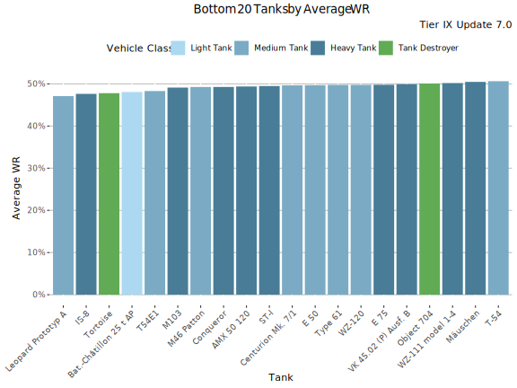
Lowest Average WR - Table
Average WR denotes average WR in a tank across all the players during the update. Player WR denotes the tank’s players' average WR across all the tanks during the update.
| Tank | Average WR | Player WR at Tier | Players | Battles/Player | Vehicle Class | Tank type |
|---|---|---|---|---|---|---|
| Leopard Prototyp A | 47.1% | 48.3% | 3 408 | 110 | Medium Tank | Researchable |
| IS-8 | 47.7% | 47.9% | 6 109 | 142 | Heavy Tank | Researchable |
| Tortoise | 47.8% | 48.2% | 1 772 | 135 | Tank Destroyer | Researchable |
| Bat.-Châtillon 25 t AP | 48.2% | 49.7% | 2 001 | 104 | Light Tank | Researchable |
| T54E1 | 48.3% | 49% | 3 714 | 104 | Medium Tank | Researchable |
| M103 | 49.2% | 49.2% | 2 819 | 113 | Heavy Tank | Researchable |
| Conqueror | 49.3% | 49.8% | 1 936 | 104 | Heavy Tank | Researchable |
| M46 Patton | 49.3% | 49.9% | 1 169 | 119 | Medium Tank | Researchable |
| AMX 50 120 | 49.3% | 49.4% | 3 202 | 106 | Heavy Tank | Researchable |
| ST-I | 49.5% | 49.3% | 2 982 | 127 | Heavy Tank | Researchable |
| E 50 | 49.7% | 50.2% | 2 617 | 109 | Medium Tank | Researchable |
| Centurion Mk. 7/1 | 49.7% | 50.2% | 1 850 | 116 | Medium Tank | Researchable |
| Type 61 | 49.7% | 50.6% | 1 482 | 115 | Medium Tank | Researchable |
| WZ-120 | 49.8% | 50.4% | 1 756 | 107 | Medium Tank | Researchable |
| E 75 | 49.9% | 49.4% | 7 798 | 126 | Heavy Tank | Researchable |
| VK 45.02 (P) Ausf. B | 50% | 49.8% | 1 660 | 106 | Heavy Tank | Researchable |
| Object 704 | 50.2% | 49.8% | 5 620 | 126 | Tank Destroyer | Researchable |
| WZ-111 model 1-4 | 50.3% | 50.5% | 856 | 101 | Heavy Tank | Researchable |
| Mäuschen | 50.5% | 49.9% | 1 934 | 103 | Heavy Tank | Researchable |
| T-54 | 50.7% | 50.7% | 9 594 | 142 | Medium Tank | Researchable |
Lowest Average Damage
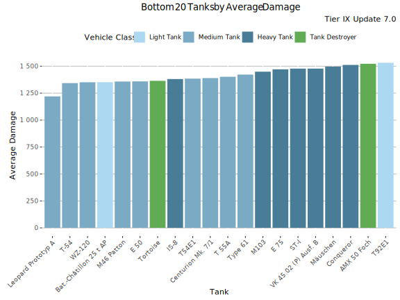
Lowest Average Damage - Table
| Tank | Average Damage | Average WR | Player WR at Tier | Players | Battles/Player | Vehicle Class | Tank type |
|---|---|---|---|---|---|---|---|
| Leopard Prototyp A | 1 221 | 47.1% | 48.3% | 3 408 | 110 | Medium Tank | Researchable |
| T-54 | 1 345 | 50.7% | 50.7% | 9 594 | 142 | Medium Tank | Researchable |
| WZ-120 | 1 351 | 49.8% | 50.4% | 1 756 | 107 | Medium Tank | Researchable |
| Bat.-Châtillon 25 t AP | 1 355 | 48.2% | 49.7% | 2 001 | 104 | Light Tank | Researchable |
| E 50 | 1 355 | 49.7% | 50.2% | 2 617 | 109 | Medium Tank | Researchable |
| M46 Patton | 1 359 | 49.3% | 49.9% | 1 169 | 119 | Medium Tank | Researchable |
| Tortoise | 1 367 | 47.8% | 48.2% | 1 772 | 135 | Tank Destroyer | Researchable |
| T54E1 | 1 383 | 48.3% | 49% | 3 714 | 104 | Medium Tank | Researchable |
| IS-8 | 1 385 | 47.7% | 47.9% | 6 109 | 142 | Heavy Tank | Researchable |
| Centurion Mk. 7/1 | 1 394 | 49.7% | 50.2% | 1 850 | 116 | Medium Tank | Researchable |
| T 55A | 1 402 | 51.1% | 51.8% | 874 | 61 | Medium Tank | Premium |
| Type 61 | 1 419 | 49.7% | 50.6% | 1 482 | 115 | Medium Tank | Researchable |
| M103 | 1 454 | 49.2% | 49.2% | 2 819 | 113 | Heavy Tank | Researchable |
| E 75 | 1 475 | 49.9% | 49.4% | 7 798 | 126 | Heavy Tank | Researchable |
| ST-I | 1 480 | 49.5% | 49.3% | 2 982 | 127 | Heavy Tank | Researchable |
| VK 45.02 (P) Ausf. B | 1 482 | 50% | 49.8% | 1 660 | 106 | Heavy Tank | Researchable |
| Mäuschen | 1 494 | 50.5% | 49.9% | 1 934 | 103 | Heavy Tank | Researchable |
| Conqueror | 1 514 | 49.3% | 49.8% | 1 936 | 104 | Heavy Tank | Researchable |
| AMX 50 Foch | 1 521 | 51.4% | 51.5% | 1 191 | 105 | Tank Destroyer | Researchable |
| T92E1 | 1 533 | 52.1% | 52.1% | 12 828 | 118 | Light Tank | Researchable |
Lowest Average Kills/Battle
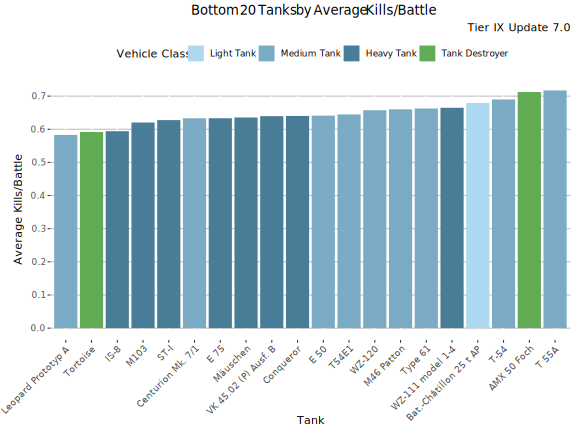
Lowest Average Kills/Battle - Table
| Tank | Average Kills/Battle | Average WR | Player WR at Tier | Players | Battles/Player | Vehicle Class | Tank type |
|---|---|---|---|---|---|---|---|
| Leopard Prototyp A | 0.58 | 47.1% | 48.3% | 3 408 | 110 | Medium Tank | Researchable |
| Tortoise | 0.59 | 47.8% | 48.2% | 1 772 | 135 | Tank Destroyer | Researchable |
| IS-8 | 0.60 | 47.7% | 47.9% | 6 109 | 142 | Heavy Tank | Researchable |
| M103 | 0.62 | 49.2% | 49.2% | 2 819 | 113 | Heavy Tank | Researchable |
| ST-I | 0.63 | 49.5% | 49.3% | 2 982 | 127 | Heavy Tank | Researchable |
| Mäuschen | 0.63 | 50.5% | 49.9% | 1 934 | 103 | Heavy Tank | Researchable |
| E 75 | 0.64 | 49.9% | 49.4% | 7 798 | 126 | Heavy Tank | Researchable |
| Centurion Mk. 7/1 | 0.64 | 49.7% | 50.2% | 1 850 | 116 | Medium Tank | Researchable |
| E 50 | 0.64 | 49.7% | 50.2% | 2 617 | 109 | Medium Tank | Researchable |
| Conqueror | 0.64 | 49.3% | 49.8% | 1 936 | 104 | Heavy Tank | Researchable |
| VK 45.02 (P) Ausf. B | 0.64 | 50% | 49.8% | 1 660 | 106 | Heavy Tank | Researchable |
| T54E1 | 0.64 | 48.3% | 49% | 3 714 | 104 | Medium Tank | Researchable |
| WZ-120 | 0.66 | 49.8% | 50.4% | 1 756 | 107 | Medium Tank | Researchable |
| M46 Patton | 0.66 | 49.3% | 49.9% | 1 169 | 119 | Medium Tank | Researchable |
| Type 61 | 0.66 | 49.7% | 50.6% | 1 482 | 115 | Medium Tank | Researchable |
| WZ-111 model 1-4 | 0.67 | 50.3% | 50.5% | 856 | 101 | Heavy Tank | Researchable |
| Bat.-Châtillon 25 t AP | 0.68 | 48.2% | 49.7% | 2 001 | 104 | Light Tank | Researchable |
| T-54 | 0.69 | 50.7% | 50.7% | 9 594 | 142 | Medium Tank | Researchable |
| AMX 50 Foch | 0.71 | 51.4% | 51.5% | 1 191 | 105 | Tank Destroyer | Researchable |
| T 55A | 0.72 | 51.1% | 51.8% | 874 | 61 | Medium Tank | Premium |
Lowest Spot Rate
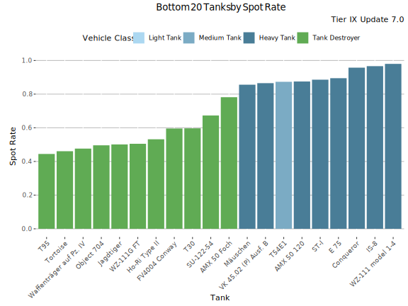
Lowest Spot Rate - Table
| Tank | Spot Rate | Average WR | Player WR at Tier | Players | Battles/Player | Vehicle Class | Tank type |
|---|---|---|---|---|---|---|---|
| T95 | 0.45 | 51.8% | 51.4% | 1 204 | 147 | Tank Destroyer | Researchable |
| Tortoise | 0.46 | 47.8% | 48.2% | 1 772 | 135 | Tank Destroyer | Researchable |
| Waffenträger auf Pz. IV | 0.48 | 52% | 52.1% | 18 498 | 149 | Tank Destroyer | Researchable |
| Object 704 | 0.50 | 50.2% | 49.8% | 5 620 | 126 | Tank Destroyer | Researchable |
| Jagdtiger | 0.50 | 51.1% | 50.6% | 4 043 | 115 | Tank Destroyer | Researchable |
| WZ-111G FT | 0.50 | 51.4% | 51.1% | 1 225 | 106 | Tank Destroyer | Researchable |
| Ho-Ri Type II | 0.53 | 52% | 51.7% | 1 821 | 111 | Tank Destroyer | Researchable |
| FV4004 Conway | 0.60 | 52.2% | 52.2% | 2 684 | 110 | Tank Destroyer | Researchable |
| T30 | 0.60 | 51.3% | 51.5% | 4 283 | 119 | Tank Destroyer | Researchable |
| SU-122-54 | 0.67 | 51.4% | 51.3% | 1 918 | 110 | Tank Destroyer | Researchable |
| AMX 50 Foch | 0.78 | 51.4% | 51.5% | 1 191 | 105 | Tank Destroyer | Researchable |
| Mäuschen | 0.85 | 50.5% | 49.9% | 1 934 | 103 | Heavy Tank | Researchable |
| VK 45.02 (P) Ausf. B | 0.87 | 50% | 49.8% | 1 660 | 106 | Heavy Tank | Researchable |
| T54E1 | 0.87 | 48.3% | 49% | 3 714 | 104 | Medium Tank | Researchable |
| AMX 50 120 | 0.87 | 49.3% | 49.4% | 3 202 | 106 | Heavy Tank | Researchable |
| ST-I | 0.89 | 49.5% | 49.3% | 2 982 | 127 | Heavy Tank | Researchable |
| E 75 | 0.90 | 49.9% | 49.4% | 7 798 | 126 | Heavy Tank | Researchable |
| Conqueror | 0.96 | 49.3% | 49.8% | 1 936 | 104 | Heavy Tank | Researchable |
| IS-8 | 0.97 | 47.7% | 47.9% | 6 109 | 142 | Heavy Tank | Researchable |
| WZ-111 model 1-4 | 0.98 | 50.3% | 50.5% | 856 | 101 | Heavy Tank | Researchable |
Lowest Hit Rate

Lowest Hit Rate - Table
| Tank | Hit Rate | Average WR | Player WR at Tier | Players | Battles/Player | Vehicle Class | Tank type |
|---|---|---|---|---|---|---|---|
| Object 704 | 77.5% | 50.2% | 49.8% | 5 620 | 126 | Tank Destroyer | Researchable |
| Tortoise | 77.7% | 47.8% | 48.2% | 1 772 | 135 | Tank Destroyer | Researchable |
| Jagdtiger | 78.1% | 51.1% | 50.6% | 4 043 | 115 | Tank Destroyer | Researchable |
| SU-122-54 | 78.6% | 51.4% | 51.3% | 1 918 | 110 | Tank Destroyer | Researchable |
| Waffenträger auf Pz. IV | 78.8% | 52% | 52.1% | 18 498 | 149 | Tank Destroyer | Researchable |
| T95 | 78.8% | 51.8% | 51.4% | 1 204 | 147 | Tank Destroyer | Researchable |
| Ho-Ri Type II | 79.1% | 52% | 51.7% | 1 821 | 111 | Tank Destroyer | Researchable |
| AMX 50 Foch | 79.5% | 51.4% | 51.5% | 1 191 | 105 | Tank Destroyer | Researchable |
| Leopard Prototyp A | 80% | 47.1% | 48.3% | 3 408 | 110 | Medium Tank | Researchable |
| T92E1 | 80.5% | 52.1% | 52.1% | 12 828 | 118 | Light Tank | Researchable |
| FV4004 Conway | 80.5% | 52.2% | 52.2% | 2 684 | 110 | Tank Destroyer | Researchable |
| T30 | 80.6% | 51.3% | 51.5% | 4 283 | 119 | Tank Destroyer | Researchable |
| WZ-111G FT | 80.9% | 51.4% | 51.1% | 1 225 | 106 | Tank Destroyer | Researchable |
| T54E1 | 80.9% | 48.3% | 49% | 3 714 | 104 | Medium Tank | Researchable |
| WZ-120 | 81% | 49.8% | 50.4% | 1 756 | 107 | Medium Tank | Researchable |
| Bat.-Châtillon 25 t AP | 81.1% | 48.2% | 49.7% | 2 001 | 104 | Light Tank | Researchable |
| E 50 | 81.1% | 49.7% | 50.2% | 2 617 | 109 | Medium Tank | Researchable |
| T 55A | 81.3% | 51.1% | 51.8% | 874 | 61 | Medium Tank | Premium |
| Centurion Mk. 7/1 | 81.4% | 49.7% | 50.2% | 1 850 | 116 | Medium Tank | Researchable |
| T-54 | 81.4% | 50.7% | 50.7% | 9 594 | 142 | Medium Tank | Researchable |
Least popular Tanks
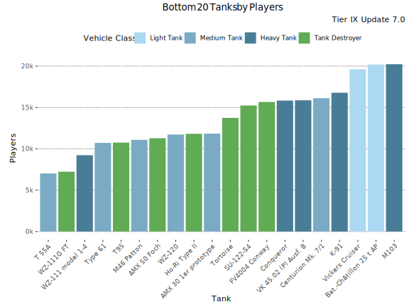
Least played Tanks
This graph shows the most played tanks by number of battles during the update 7.0.
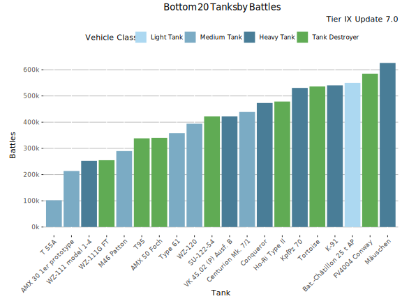
Least Played Tanks - Table
| Tank | Battles | Average WR | Player WR at Tier | Players | Battles/Player | Vehicle Class | Tank type |
|---|---|---|---|---|---|---|---|
| T 55A | 101 982 | 52.8% | 53.3% | 7 023 | 15 | Medium Tank | Premium |
| AMX 30 1er prototype | 213 763 | 57.4% | 57% | 11 842 | 18 | Medium Tank | Premium |
| WZ-111 model 1-4 | 252 393 | 54.5% | 52.1% | 9 229 | 27 | Heavy Tank | Researchable |
| WZ-111G FT | 254 743 | 54.2% | 52.6% | 7 233 | 35 | Tank Destroyer | Researchable |
| M46 Patton | 289 606 | 52.8% | 52.6% | 11 087 | 26 | Medium Tank | Researchable |
| T95 | 338 253 | 54.9% | 52.9% | 10 758 | 31 | Tank Destroyer | Researchable |
| AMX 50 Foch | 339 930 | 54.6% | 52.9% | 11 283 | 30 | Tank Destroyer | Researchable |
| Type 61 | 357 802 | 52.9% | 52.6% | 10 717 | 33 | Medium Tank | Researchable |
| WZ-120 | 394 028 | 52.7% | 52% | 11 730 | 34 | Medium Tank | Researchable |
| SU-122-54 | 421 710 | 54.7% | 53.3% | 15 241 | 28 | Tank Destroyer | Researchable |
| VK 45.02 (P) Ausf. B | 421 718 | 52.8% | 52% | 15 868 | 27 | Heavy Tank | Researchable |
| Centurion Mk. 7/1 | 438 767 | 51.9% | 52.4% | 16 124 | 27 | Medium Tank | Researchable |
| Conqueror | 473 122 | 51.8% | 52.1% | 15 835 | 30 | Heavy Tank | Researchable |
| Ho-Ri Type II | 478 699 | 55.1% | 52.7% | 11 817 | 41 | Tank Destroyer | Researchable |
| KpfPz 70 | 530 596 | 54.5% | 54.1% | 25 267 | 21 | Heavy Tank | Premium |
| Tortoise | 536 002 | 50.1% | 50.2% | 13 742 | 39 | Tank Destroyer | Researchable |
| K-91 | 540 430 | 54.5% | 53.1% | 16 784 | 32 | Heavy Tank | Premium |
| Bat.-Châtillon 25 t AP | 549 864 | 51% | 51.9% | 20 196 | 27 | Light Tank | Researchable |
| FV4004 Conway | 584 841 | 54.3% | 53.4% | 15 667 | 37 | Tank Destroyer | Researchable |
| Mäuschen | 625 892 | 51.5% | 50.7% | 20 807 | 30 | Heavy Tank | Researchable |
-

This work is licensed under a Creative Commons Attribution-ShareAlike 4.0 International License.
-

-

Blitzanalysiz() is a player-created website for World of Tanks: Blitz and developed in accordance with WG DPP. This site is not an official Wargaming or World of Tanks: Blitz website. World of Tanks Blitz and Wargaming are trademarks of Wargaming.net Limited. Game content and materials copyright © Wargaming.net. All rights reserved.